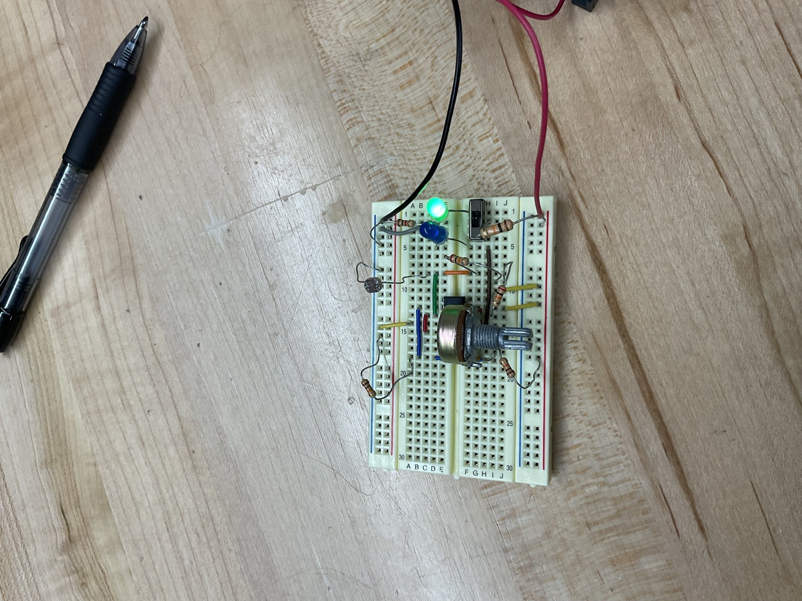

Light-ActivatedSwitch PCB
One circuit taken from breadboard to fabricated board over a summer, outside of any class. I picked a simple circuit on purpose so I could focus on learning the board design process.
Problem
None of my classes were going to teach me how to actually get a board made.
I'd done plenty of circuit analysis on paper and in simulation, but none of it ever asked whether a design could actually be manufactured. Over a summer I taught myself the schematic-to-board process from scratch.
Plan
A photoresistor and a Schmitt trigger.
The circuit switches a load when ambient light crosses a threshold. A photoresistor senses the light, and a Schmitt trigger makes the decision. A Schmitt trigger is a comparator with hysteresis, meaning two thresholds instead of one, made by feeding the output back to the non-inverting input. That's useful for a slow, noisy signal like fading daylight: the output can't rapidly flip back and forth, because the input has to travel a real distance to switch it back.
Trials & Errors
Six versions of one circuit, and almost everything I learned was on the physical side.
Four breadboard revisions to get the thresholds and switching behavior right, then two board revisions. The schematic barely changed. What changed was everything around it: footprints that didn't match real parts, routing that passed the design rule check but would have been miserable to assemble, and slowly realizing that a board is a mechanical object as much as an electrical one.

Result
The board itself is simple. What I got out of it was the process.
This project taught me the path between a working circuit and a physical object: schematic capture, footprints, layout, design rules, fabrication files. Every board I've designed since, including the water bottle front end and the multitool bench, built on what I learned here.